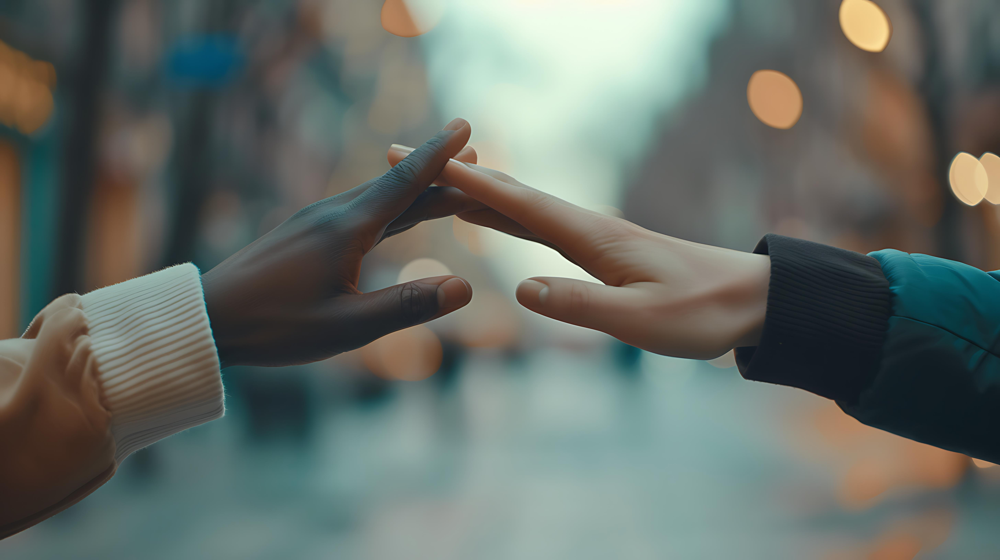
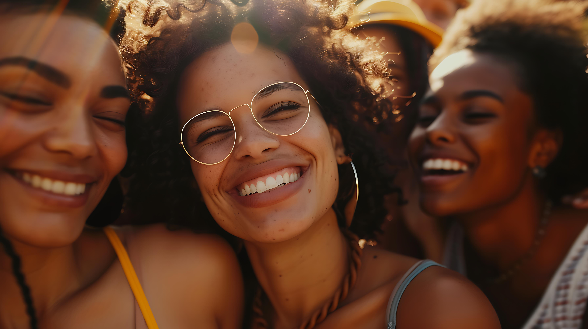

About Self-Help Group
The Self-Help Group Guide was created to provide individuals with valuable resources, support, and guidance. We believe in the transformative power of self-help groups and aim to facilitate positive change in individuals’ lives through accessible online resources.
Mission Statement
Our mission is to provide a supportive environment where individuals can come together to share experiences, offer mutual support, and empower each other in their personal growth and well-being.
Mission Statement
Our mission is to provide a supportive environment where individuals can come together to share experiences, offer mutual support, and empower each other in their personal growth and well-being.
Overview
The Self-Help Group was founded in 2024 by a group of individuals who recognized the need for a community-based approach to personal development and support. Since then, we have grown into a vibrant community of members dedicated to helping each other thrive.
Core Values
Our core values include empathy, respect, inclusivity, and confidentiality. These values guide our interactions and activities within the group, fostering a safe and supportive environment for all members.
Membership Information
Membership in the Self-Help Group is open to anyone who shares our commitment to personal growth and mutual support. There are no eligibility criteria or membership fees required. To join, simply attend one of our meetings and introduce yourself to the group.
Leadership Team
Our leadership team consists of experienced facilitators who oversee the operations of the Self-Help Group. Each member of the team brings unique skills and expertise to their role, ensuring that our group runs smoothly and effectively.
Meeting Information
We hold regular meetings every Wednesday hybrid meeting virtual and online from 6pm to 8pm. Meetings typically last for 2 hours and include discussions on various topics related to personal development, mental health, and well-being. All members are encouraged to actively participate and contribute to the discussions.
Testimonials
Here are some testimonials from our members:

"Joining the Self-Help Group has been a life-changing experience for me. I've found a supportive community where I can share my struggles and receive encouragement and guidance."
Community Engagement
We are actively engaged in various community outreach and advocacy efforts aimed at raising awareness, reducing stigma, and promoting mental health and well-being in the broader community. Some of our initiatives include [examples of community engagement activities].
Partnerships and Collaborations
We collaborate with other organizations, agencies, and professionals who share our mission and values. These partnerships allow us to expand our reach and enhance the services and support we provide to our members.
Contact Information
If you would like to learn more about the Self-Help Group or get involved, please contact us at:
Email: info@selfhelpgroup.org
Phone: +263774320424
Address: Bulawayo/ Zimbabwe